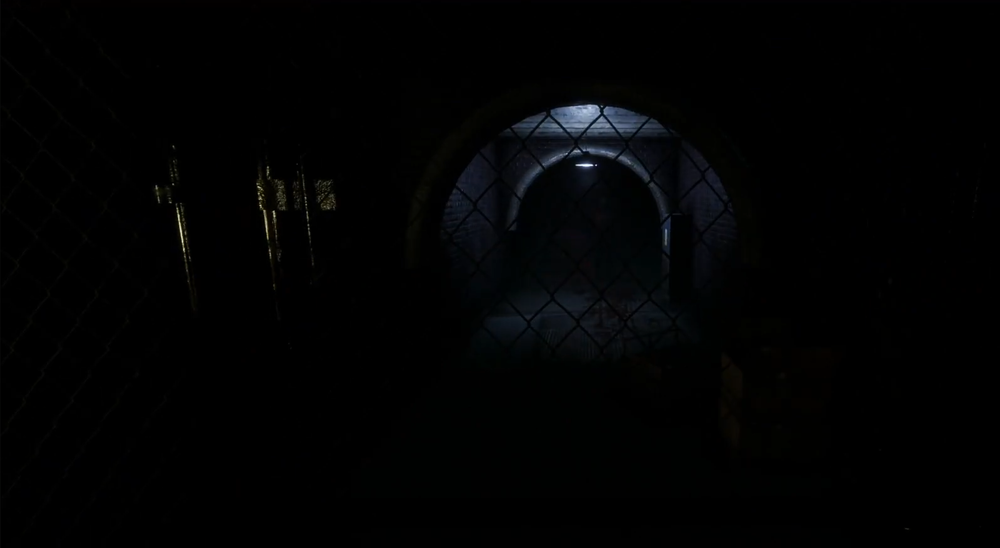
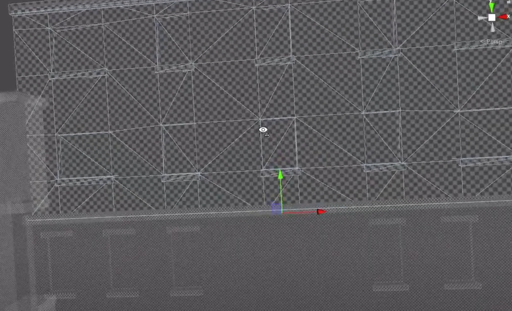
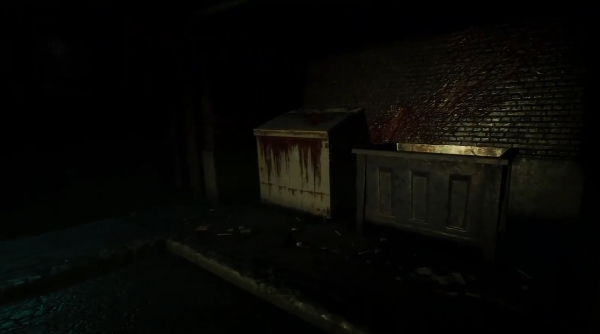
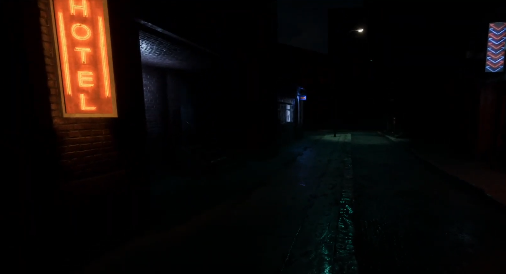
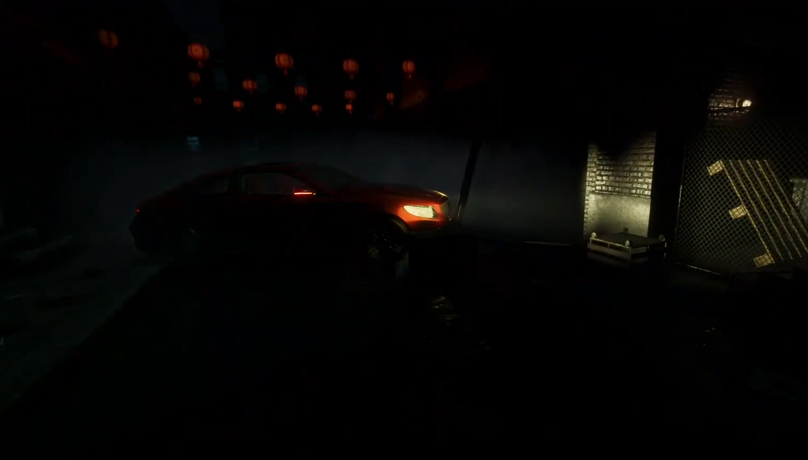

Another small assignment I had during my studies at Dundalk's Institute of Technology. The main task was to make
a first person HDRP project with a focus on lighting, shaders and optimizations.
The project consisted of using a city modular asset to create our own small area where we could work on setting an atmosphere
and utilize different shader's and lighting but keeping good performance. As per usual, I decided to keep a horror esthetic
to the game, utilizing decals to add believable blood splatters.
I opted to create a erie atmosphere by reducing light and adding some fog, in addition to a spectral green directional light
and a whole moon in the distance. There are some decals that work as blood spatters, utilizing dirt as texture to give it a
more viceral look.
Having crashed or abandoned cars giving a thrilling sensation, as well as, utilizing lights to direct
player attention and highlight details. Moreover, utilizing Post Processing to add some static effect, similar
to the ones implemented for lost footage videos.

The biggest focus of the project was to be able to use and set up lightmaps to avoid any glitches or unnecessary loss of
performance. For this, I lowered parameters and overall quality of those meshes that were not going to be affected by
light or were plainly out of sight.
Meshes that are out of playing area are not only marked as static but also do not contribute to global lighting, as well
as adapting light maps' size and compression depending on the type of mesh affected and their overall role in populating the
scene.

Unfortunately the assets provided did not come with any variants with lower resolution. Now, I would probably have either
different models (with less polygon count) or even changing the texture quality based on how close the player is.
Use of LOD and occlussion facilitate the improvement of performance, both used in the project but with less precision than
I use now for my games. Within the project, objects like the containers will not be render if a certain distance is
reached, this is to avoid the sudden dissapearance or appearance of objects around the player which would break immersion
and overall disrupt the game flow.

Most challenges came from managing lighting, I understand that to fully get a grasp on how to properly set up a lightmap
and use lighting in a scene that doesn't only look well but also does not destroy performance takes a lot of practice. Given
the time restraints and the allocated time to be able to work on the project, I was left with very limited room to properly
assess and stablish a more efficient and reliable scene.
Nonetheless, I feel quite proud of what I managed to achieve and I'm looking forward to giving it another go in future
projects.

I think that this project further developed my knowledge on lighting and it was definitely an upgrade from my
previous URP project, "Non Binary", in that area. Occlusion was something I also worked upon in previous projects, but in
this one there were extra factors that came to play that I haven't considered before, such as camera resolution.
Moreover, use of shaders has never been my forte, but being able to create a shader decal and it looking great boosted
my confidence towards working in other types of shaders, like the lava effect I used in Pestis.